İçindekiler
- İçindekiler
- Genel Özet
- Temel Terimler ve Kavramlar
- Ana Gövde: Kronolojik veya Tematik Kayıt
- Kimyasal Risk Etmenleri Tanımları
- İşçi Sağlığını Etkileyen Kimyasal Etmenler
- Tehlikeli Kimyasalların Sınıflandırılması
- Tehlikeli Madde / Müstahzar
- Alevlenir Madde (F)
- Oksitleyici Madde (O)
- Patlayıcı Madde (E)
- Toksik Madde (T)
- Zararlı Madde (Xn)
- Toksik Maddeler
- İlaç ile Zehir Arasındaki Fark: Doz
- Toksik Bileşikler
- Kanserojen Maddeler
- Mutajen Maddeler
- Kimyasalların Sağlığa Etkileri
- Kimyasalların Vücuda Giriş Yolları
- Hedef Organlar
- Sanayide Kabul Edilebilir Zehirli Madde Değerleri
- Çalışma Ortamında Maruz Kalınan Kimyasal Madde Türleri
- Kimyasal Etmenleri Kontrol Yöntemleri
- Kimyasal Risk Etmenlerine Maruziyetin Yüksek Olduğu İş Kolları
- MSDS (Malzeme Güvenlik Bilgi Formları)
- Güvenlik Bilgi Formu (GBF)
- GBF İçermesi Gereken Minimum Bilgiler
- Malzemenin ve firmanın tanımlanması
- Bileşimi / İçindeki maddeler hakkında bilgiler
- Tehlike tanımlamaları
- Yangınla mücadele önlemleri
- İlk yardım önlemleri
- Kazayla açığa çıkması durumunda alınacak önlemler
- Taşıma, kullanma, depolama önlemleri
- Maruz kalma kontrolleri / Kişisel korunma
- Fiziksel ve kimyasal özellikler
- Kararlılık ve reaktivitesi
- Toksikolojik bilgiler
- Ekolojik önlemler
- İmhaya-bertaraf a dair bilgiler
- Taşıma nakliye önlemleri
- Denetim ve Yaptırım
- Tehlikeli Kimyasal Madde İşaretleri
- ADR İşaretleri (I)
- Bazı Maddelerin Zararlı Etkisi ve Yapılacak İlkyardım
- Temel Formüller ve Hızlı Bilgiler
- Referanslar
Genel Özet
Bu belge, işyerlerinde çalışanların sağlığını tehdit eden kimyasal risk etmenlerini kapsamlı bir şekilde incelemektedir. Kimyasal maddelerin tanımından başlayarak, tehlikeli kimyasalların sınıflandırılmasına, insan vücuduna etkilerine, maruziyet yollarına ve bu riskleri kontrol etme yöntemlerine kadar geniş bir yelpazede bilgi sunulmuştur. Özellikle meslek hastalıkları üzerinde durularak, kimyasal etmenlerin neden olduğu sağlık sorunları ve bu sorunlara yol açan toksik, kanserojen ve mutajen maddeler detaylandırılmıştır. Belge, kimyasallarla güvenli çalışmanın önemini vurgulamakta ve Güvenlik Bilgi Formları (GBF) gibi temel dokümantasyonun içeriğini açıklamaktadır. Amacı, çalışanların kimyasal riskler hakkında bilinçlenmesini sağlayarak iş güvenliği ve sağlığına katkıda bulunmaktır.
Temel Terimler ve Kavramlar
Kimyasal Madde: Doğal ortamda bulunan veya yapay olarak üretilen, herhangi bir süreçte oluşan veya atık olarak ortaya çıkan element, bileşik veya karışımlardır. Tehlikeli Kimyasal Madde: Patlayıcı, zehirli, aşındırıcı, kanserojen gibi bir veya birden fazla zararlı özelliğe sahip, insan sağlığı ve güvenliği için risk oluşturan maddelerdir. Maruziyet Sınır Değeri: Kimyasalın havada bulunabileceği, ancak çoğu çalışanın sağlık sorunları yaşamayacağı varsayılan yasal veya tavsiye edilen üst konsantrasyon sınırıdır (Örn. MAC/MAK, ESD/TLV). Toksikoloji: Maddelerin canlı organizmalar üzerindeki zararlı etkilerini ve bu etkilerin mekanizmalarını inceleyen bilim dalıdır. LD50 (Öldürücü Doz 50): Bir kimyasal maddenin belirli bir popülasyondaki hayvanların %50’sini öldürmek için gereken dozu ifade eder. Kanserojen Madde: İnsanlarda veya hayvanlarda kansere neden olduğu bilinen veya şüphelenilen maddelerdir. Mutajen Madde: Canlı organizmaların genetik materyalinde (DNA) kalıcı değişikliklere (mutasyonlara) neden olabilen maddelerdir. Güvenlik Bilgi Formu (GBF/MSDS): Tehlikeli kimyasalların özellikleri, riskleri, güvenli kullanım, depolama ve acil durum önlemleri hakkında ayrıntılı bilgi sağlayan belgedir. Basit Boğucu Gazlar: Havadaki oksijen oranını düşürerek solunumu zorlaştıran, ancak kendileri zehirli olmayan gazlardır. Sistemik Zehirler: Vücuda girdiğinde belirli organ sistemlerinin (sinir sistemi, karaciğer, böbrek vb.) fonksiyonlarını bozan maddelerdir.
Ana Gövde: Kronolojik veya Tematik Kayıt
Kimyasal Risk Etmenleri Tanımları
Bir madde, doğal haliyle bulunabilir, üretilebilir, bir işlem sırasında veya atık olarak ortaya çıkabilir ya da kazara oluşabilir. Bu tür elementler, bileşikler veya karışımlar kimyasal madde olarak tanımlanır.
Tehlikeli kimyasal madde ise patlayıcı, oksitleyici, çok kolay alevlenir, kolay alevlenir, alevlenir, toksik, çok toksik, zararlı, aşındırıcı, tahriş edici, alerjik, kanserojen, mutajen, üreme için toksik ve çevre için tehlikeli özelliklerden bir veya birkaçına sahip olan, mesleki maruziyet sınır değeri belirlenmiş; kimyasal, fizikokimyasal veya toksikolojik özellikleri ve kullanılma veya işyerinde bulundurulma şekli nedeniyle işçilerin sağlık ve güvenliği açısından risk oluşturabilecek maddelerdir.
İşçi Sağlığını Etkileyen Kimyasal Etmenler
Günümüz teknolojisiyle birlikte kimyasal madde çeşitliliği artmıştır. Özellikle ağır ve tehlikeli işlerde çalışanlar, diğer topluma göre kimyasal etmenlerle daha fazla etkileşime girer ve bu, sağlıklarını ciddi şekilde tehdit eder.
İşyerlerinde sıkça karşılaşılan kimyasal maddeler arasında solventler (çözücüler), zehirli gazlar, asitler, alkaliler ve boyalar gibi çeşitli gruplar yer alır.
Kimyasalların üzerinde içerik etiketleri ve uyarıcı bilgiler bulunması hayati önem taşır. Bu bilgiler, potansiyel tehlikelerin bilinmesini sağlayarak önleyici tedbirlerin alınmasında ve sorunların çözümünde kritik rol oynar.
Bilgi
Kimyasal etkenler, endüstride en fazla meslek hastalığına neden olan etkenlerdir. Endüstrinin farklı sektörlerinde üretim türüne ve sürecine bağlı olarak çeşitli kimyasal maddeler kullanılır. Örneğin, asitler, tozlar, üst solunum yollarını tahriş eden maddeler; boğucu gazlar, anestetik ve narkotik maddeler (olefin hidrokarbonlar, alifatik alkoller); halojenli hidrokarbonlar, benzol, fenol, sinir sistemi zehirleri, toksik metaller gibi sistematik zehirler kansere, akciğer hastalıklarına, cilt hastalıklarına ve diğer meslek hastalıklarına yol açabilir.
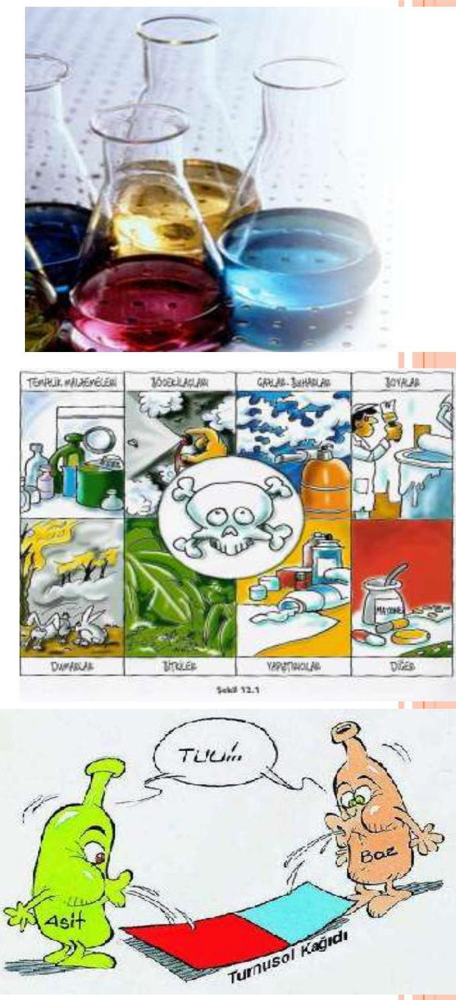
Tehlikeli Kimyasalların Sınıflandırılması
Uluslararası sınıflandırma sistemleri, tehlikeli kimyasalları çeşitli kriterlere göre gruplandırır.
Miktara Göre Sınıflandırma
Kimyasalların miktarı ve çevreye salınımı, tehlike değerlendirmesinde önemli rol oynar.
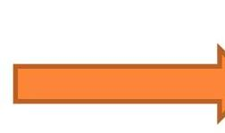
- Kimyasalın miktarı
- Çevredeki emisyonu
Dozlara Göre Sınıflandırma
Bir kimyasalın ölümcül veya etkili dozu, toksisitesini belirler.
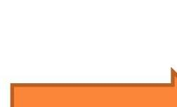
- Öldürücü doz ()
- Öldürücü konsantrasyon ()
Derişime (Konsantrasyon) Göre Sağlık Zararı Sınıflandırmaları
Katı, sıvı ve gaz halindeki kimyasallar, sağlık zararları dikkate alınarak derişimlerine göre sınıflandırılır:
- Zehirli ve zararlı maddelerin yutulması, deriden alınması veya solunması durumunda ani ölüme neden oldukları derişimler.
- Ölüme neden olmayan ancak kalıcı etki bırakan zehirli ve zararlı maddelerin kalıcı etki yaptıkları derişimler.
- Tekrarlanan veya sürekli maruziyet sonucu ciddi etkiler gösteren zehirli ve zararlı maddelerin ciddi hasar verdikleri derişimler.
- Aşındırıcı ve tahriş edici maddelerin yanıklara, gözde ve ciltte tahrişe neden oldukları derişimler.
- Zararlı ve tahriş edici maddelerin göze ve solunum yoluna zarar verdikleri derişimler.
- Kansere ve mutajenik etkilere sebep olan zehirli ve zararlı maddelerin kansere, anormal doğumlara, doğurganlık üzerinde olumsuz özelliklere sebep oldukları derişimler.
Avrupa Birliği Sınıflandırması
Avrupa Birliği, üç aşamalı toksik seviye kabul ederek kimyasalları sınıflandırmaktadır:
- Çok toksik
- Toksik
- Zararlı
- Aşındırıcı maddeler
- Sıkıştırılmış gazlar
- Radyoaktif maddeler
- Enfeksiyona neden olanlar
- Diğerleri
Bu sınıflamanın dışında kalanlar:
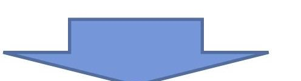
- Parlayıcı
- Patlayıcı
- Oksitleyici
- Reaktif
- Zehirli
- Tahriş edici
- Hassasiyet oluşturucu
- Kanserojen olan
- Üremeyi etkileyen
- Mutajenik etkileri olanlar
- Çevreye zarar verenler
Tehlikeli Madde / Müstahzar
Bir madde veya müstahzar, aşağıdaki özelliklerden en az birine sahipse tehlikeli olarak kabul edilir:
- Fiziko-kimyasal özellikler; Patlayıcı, oksitleyici, çok kolay alevlenir, kolay alevlenir, alevlenir.
- İnsan sağlığı üzerine etkiler; Çok toksik, toksik, zararlı, aşındırıcı, tahriş edici, hassaslaştırıcı, kanserojen, mutajen, üreme için toksik.
- Çevre için tehlikeli özellikler; Su ortamında tehlikeli, karasal ortamda tehlikeli.
Alevlenir Madde (F)
Parlama noktası arasında olan sıvı haldeki maddelerdir.
Kolay Alevlenir Madde (F)
Enerji uygulaması olmadan, ortam sıcaklığında hava ile temasında ısınabilen ve sonuç olarak alevlenen, Ateş kaynağı ile kısa süreli temasta kendiliğinden yanabilen ve ateş kaynağının uzaklaştırılmasından sonra da yanmaya devam eden katı haldeki, Parlama noktası altında olan sıvı haldeki, Su veya nemli hava ile temasında, tehlikeli miktarda, çok kolay alevlenir gaz yayan maddelerdir.
Çok Kolay Alevlenir Madde (F+)
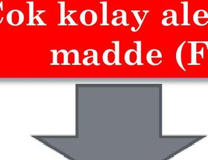
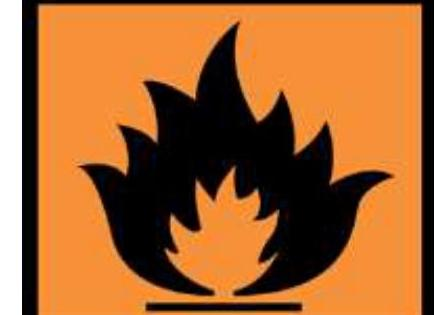
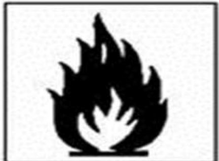
‘den düşük parlama noktası ve ‘den düşük kaynama noktasına sahip sıvı haldeki maddeler ile oda sıcaklığında ve basıncı altında hava ile temasında yanabilen, gaz halindeki maddelerdir.Oksitleyici Madde (O)
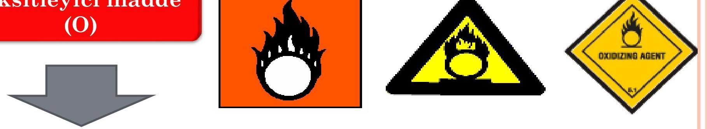
Özellikle yanıcı maddelerle olmak üzere diğer maddeler ile de temasında önemli ölçüde ekzotermik reaksiyona neden olan maddelerdir.Patlayıcı Madde (E)
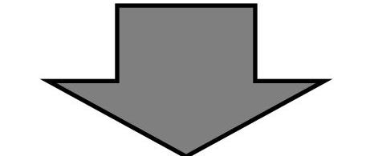
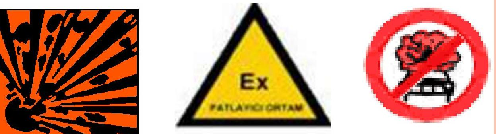
Atmosferik oksijen olmadan da ani gaz yayılımı ile ekzotermik reaksiyon verebilen ve/veya kısmen kapatıldığında ısınma ile kendiliğinden patlayan veya belirlenmiş test koşullarında patlayan, çabucak parlayan katı, sıvı, macunumsu, jelâtinimsi haldeki maddelerdir.Toksik Madde (T)
Az miktarlarda solunduğunda, ağız yoluyla alındığında, deri yoluyla emildiğinde insan sağlığı üzerinde akut veya kronik hasarlara veya ölüme neden olan maddelerdir.
Çok Toksik Madde (T+)
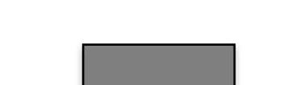
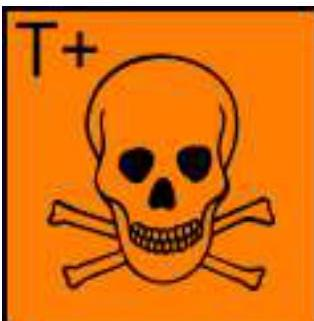
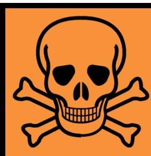
Çok az miktarlarda solunduğunda, ağız yoluyla alındığında, deri yoluyla emildiğinde insan sağlığı üzerinde akut veya kronik hasarlara veya ölüme neden olan maddelerdir.Zararlı Madde (Xn)
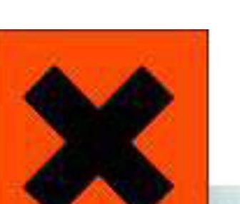
Solunduğunda, ağız yoluyla alındığında, deri yoluyla emildiğinde insan sağlığı üzerinde akut veya kronik hasarlara veya ölüme neden olan maddelerdir.Aşındırıcı Madde (C)
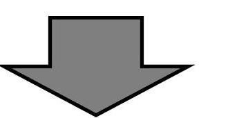
Canlı doku ile temasında, dokunun tahribatına neden olabilen maddelerdir.Toksik Maddeler
Toksik maddeler, hücrelere ve yaşayan dokulara kimyasal, biyokimyasal ya da radyoaktif nitelikte zararlar veren her türlü maddedir. Zehrin en tipik özelliği, bu zararlı etkisini en küçük dozlarda bile göstermesidir. Ağız yoluyla alınma ya da bir şekilde emilmeyle biyolojik sistemlerde hasar veya ölüm oluşturan maddelere zehir ya da Toksin, bu maddeleri inceleyen bilim dalına ise Toksikoloji denir.
İlaç ile Zehir Arasındaki Fark: Doz
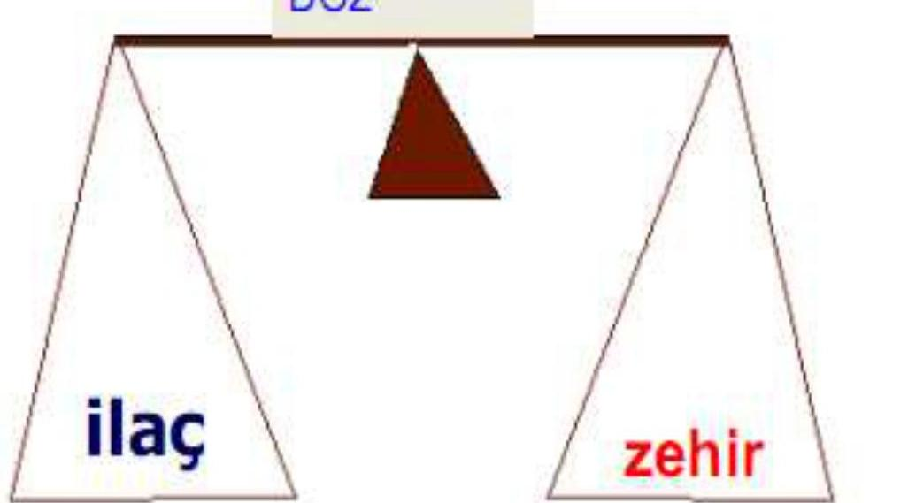
İlaç ile zehir arasındaki temel farkı doz belirler. Doğru dozda bir ilaç iyileştirici etki gösterirken, yüksek dozda zehre dönüşebilir.Toksik Bileşikler
İnsan vücudunda veya vücuda yakın bir yerde uygun koşullara sahip bir bölgeye ulaştığında yaralanmalara yol açıcı nitelikteki kimyasal bileşiklerdir.
Tahriş Ediciler
Vücuttaki mukoza zarına zarar veren korozif maddelerdir:
- Halojen asit gazları (hidrojen bromür, hidrojen klorür, hidrojen florür, hidrojen iyodür, kükürtdioksit)
- Azotoksitler (azotmonoksit, azotdioksit vb.)
- Trikloroetilen (TCE)
Boğucular
Özellikle gazlar olmak üzere, kana oksijen girmesini engelleyen ajanlardır:
- Anilin
- Karbonmonoksit (CO)
- Hidrojen
- Hidrojen siyanür
- Nitrobenzen
- Azot
- Asal gazlar (helyum, neon, argon, ksenon, kripton)
- Doymuş hidrokarbon (bütan, metan, doğalgaz, propan)
Solunumu Felç Edenler
Vücuda girdikleri zaman solunum sinir sisteminin işlev kaybına yol açacak olan maddelerdir:
- Aseton
- Asetilen
- Karbondisülfür
- Dietileter
- Etilalkol
- Etilen
- Hidrojensülfür
Sistemik Zehirler
Hayati vücut işlemlerini engelleyen maddelerdir:
- Arsenik
- Benzen
- Kadmiyum
- Karbondisülfür
- Halojenli hidrokarbonlar
- Kurşun
- Civa
- Metilalkol
- Naftalin
- Organik fosfatlar
- Toluen
- Ksilen
Kanserojen Maddeler
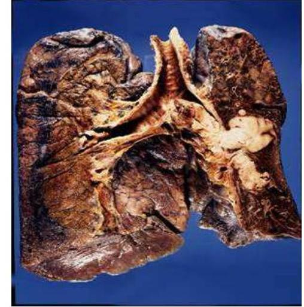
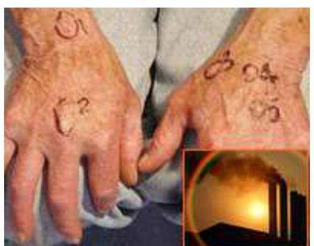
Kanserojen maddeler arasında arsenik, asbest, ağır metaller (kurşun, civa, kadmiyum), benzen ve nitrozaminler gibi maddeler bulunmaktadır. Bazı endüstri alanlarında çalışan işçilerde, normal nüfusta görülmesi beklenmeyen kanser tiplerine rastlanır. Örneğin, mezotelyoma, çok nadir görülen bir kanserdir ve sıklıkla asbest elyafına maruz kalan insanlarda görülür. Polivinil klorür (PVC) boruların ve diğer malzemelerin başlangıç maddesi olan Vinil klorür, ender rastlanan bir çeşit karaciğer kanserine neden olmaktadır.
Kanserojenler Listesi
- Arsenik bileşikleri
- Akrilonitril
- Asbest
- Kadmiyum bileşikleri
- Benzen
- Karbon tetraklorür
- Benzidin
- Kloroform
- Beta-naftilamin
- Etilenoksit
- Kromoksit
- Nikel tozu
- Krom tozu
- o-Toluidin
- Kurşun arsenat
- Vinil Klorür
- Sodyum arsenat
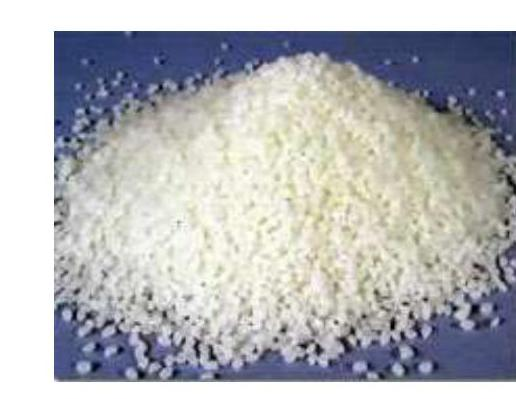
Mutajen Maddeler
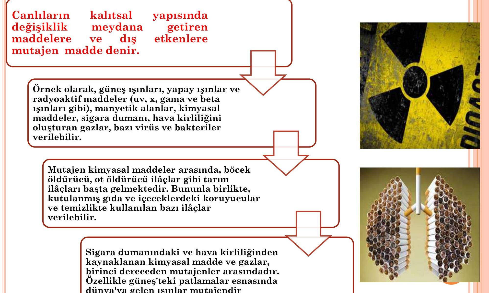
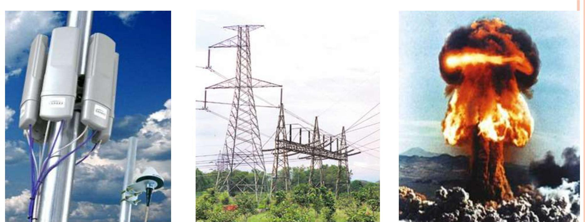
Mutajen maddeler, canlıların genetik materyalinde (DNA) kalıcı değişikliklere (mutasyonlara) neden olabilen maddelerdir. Radyoaktif maddeler ve elektrik santralleri, mobil telefon baz istasyonları ve her türlü elektrikli cihaz tarafından oluşturulan manyetik alanlar da mutajen etkenler arasındadır. Mutajen maddelerin yol açtığı hastalıklara örnek olarak kanser verilebilir. Ayrıca radyoaktif maddeler gibi bazı mutajenler, insanların üreme hücrelerini, yani gelecek nesilleri etkilemektedir.
Kimyasalların Sağlığa Etkileri
Kimyasalların sağlık üzerindeki etkileri aşağıdaki faktörlere bağlıdır:
- Kişinin fizyolojik özelliklerine (yaş, cinsiyet, genel sağlık durumu)
- Kimyasalın fiziksel ve kimyasal özelliklerine (toksisite, uçuculuk, çözünürlük)
- Maruz kalma şekline ve süresine (solunum, temas, sindirim; kısa süreli yüksek doz, uzun süreli düşük doz)
- Çevresel özelliklere (sıcaklık, nem, havalandırma)
Riskleri
- Sağlık Riskleri: Meslek hastalıkları, iş kazaları
- Güvenlik Riskleri: İş kazaları, yangın, parlama-patlama
- Çevre İçin Riskler: Ekosistemin dengesini bozma
Kimyasalların Vücuda Giriş Yolları
Kimyasallar, vücuda bilinen üç yoldan girerek sağlığa zarar verirler:
Solunum
Gaz, toz, buhar, duman, sıvı veya katı maddelerin buharları vücuda solunum yoluyla girerler. Bu yolla vücuda alınan toksik maddeler oldukça hızlı ve etkin bir şekilde kana karışır, dolayısıyla organizmaya girer.
Absorbsiyon (Deri veya Gözlerden)
Deride kesilmiş veya zedelenmiş bir yer varsa hızlıca girebilir veya bazı maddeler kıl köklerinden veya deri üzerindeki yağ tabakasını çözerek vücuda girerler. Özel önlem alınmamış ve uyarı bulunmayan bazı kimyasallara dokunulması veya bu maddelerle koruyucusuz çalışılması, işçilerin pek çok kimyasalın zararlı miktarlarına deri yolu ile maruz kalmalarına neden olur. Deri yolu ile absorblanma genellikle sıvı haldeki kimyasallar için geçerli olsa da, tozlar eğer ter ile ıslatılırsa deriden emilebilir. Bazı kimyasallar hiçbir etki uyandırmadan deriden girebilir. Deride tahrişe neden olan , , gibi aşındırıcı maddelerin aksine bazı kimyasallarda herhangi bir tahriş hissedilmez. Bu da tehlikenin fark edilmemesine yol açabilir. Toluen, seyreltik soda gibi maddeler tarafından derinin koruyucu dış tabakası zarar görebilir ve bu durumda benzen, anilin, fenol gibi başka kimyasallar da deriden kan dolaşımına geçebilir.
Sindirim (Yiyerek, İçerek)
İşyerinde, insanlar zararlı kimyasal maddeleri farkında olmadan ağız yolu ile alabilirler. Yutulan zehirli bileşikler sindirim yollarında absorbe edilerek kan dolaşımına geçebilir. Bu duruma verilebilecek en çarpıcı örnek kurşun oksittir. Kurşun oksitle çalışılan işyerlerinde (akü fabrikaları gibi) işçiler sigara içmeden, herhangi bir şey yemeden önce ve vardiya sonunda el ve ağızlarını iyice yıkamazlarsa ciddi sağlık sorunlarıyla karşılaşabilirler. Eğer zehirleyici toz yiyecekle veya tükürükle yutulduğunda vücut sıvısında çözünmez ise bağırsak yoluyla doğrudan dışarı atılır. Endüstriyel zehirlenmeler genellikle kroniktir, seyrek olarak akut etkilenmelere de rastlanır. Bu nedenle etkilenmeler çoğu kez başlangıçta fark edilememekte, belirtiler (semptomlar) ortaya çıktıktan sonra alınan önlemler ve tedavinin başarı oranları zaman zaman düşük olmaktadır.
Hedef Organlar
Kimyasalların vücuda giriş yollarına ve özelliklerine bağlı olarak etkilenebilecek hedef organlar şunlardır:
- Deri: Egzama, Tahriş, İltihaplanma, Alerjik veya alerjik olmayan reaksiyonlar.
- Akciğer: Alerjik reaksiyonlar, Pnömokonyoz.
- Merkezi Sinir Sistemi: Merkezi Sinir Sistemi Etkilenmeleri, Narkotik etki, felç.
- Kan Dolaşımı Sistemi: Kemik iliğine etki sonucu lenfosit hücrelerde mutasyon, anemi.
- Karaciğer: Karaciğer fonksiyonlarında bozulmalar.
- Böbrek: Böbreklerde fonksiyon bozuklukları.
Sanayide Kabul Edilebilir Zehirli Madde Değerleri
Sanayide maruz kalınan zehirli maddeler için “tehlikesiz kabul edilebilir değerler” için iki deyim yaygın olarak kullanılmaktadır:
Müsaade Edilebilen Azami Konsantrasyon (MAC / MAK)
MAC veya MAK değeri, özellikle akut zehirli etki gösteren maddeler için önerilir. Çalışma süresi içinde hiçbir zaman aşılmaması gereken derişim değerini işaret eder.
Eşik Sınır Değer (ESD / TLV)
ESD veya TLV değeri, akut değil, kronik etki gösteren maddeler için uygun bir yoğunluk sınırlamasıdır. Eşik sınır değer, zehirli maddeye günde maruz kalma süresi de dikkate alınır ve sekiz saatlik çalışma süresince maruz kalınabilecek ortalama değeri belirler. Bu değerler, gaz ve buharlar, toz, duman için ppm (milyonda kısım) veya olarak ifade edilir. İşyeri ortam atmosferinde zehirli madde yoğunluğu (derişimi) çalışma süresi içinde, üretim, havalandırma gibi faktörlere bağlı olarak belirli bir iş gününde değişiklikler gösterebilir. MAK değer ve Eşik Sınır Değer (ESD) bu durumlara göre özellikleri belirleyen kavramlardır.
Çalışma Ortamında Maruz Kalınan Kimyasal Madde Türleri
1. Katılar
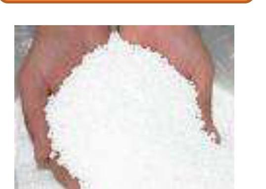
Patlayıcı maddeler dışında sürtünme yoluyla imalat veya işlem sonrasında kalan ısı ile temas ederek yangına yol açabilen ve kolaylıkla tutuşabilen ve tutuştuğunda ciddi bir tehlike yaratacak kadar şiddetle devamlı yanan maddelerdir.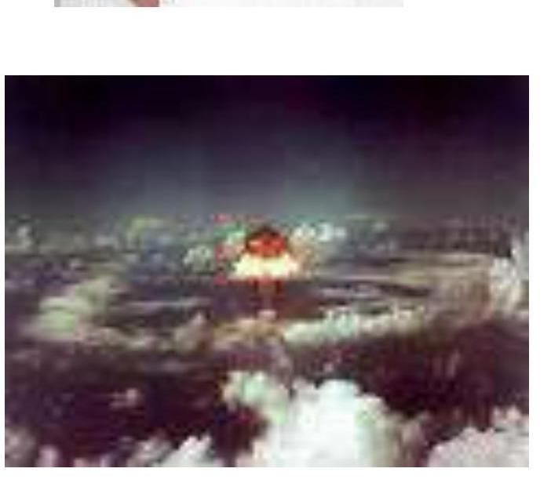
Başlıca katı kimyasallar:- Amonyum nitrat
- Arsenik, kurşun, kadmiyum, nikel
- Selüloz (oksijenler kombine)
- Fosfor
- Pikrik asit
- Sodyum sülfit
- Organik madde
- Berilyum
2. Sıvılar
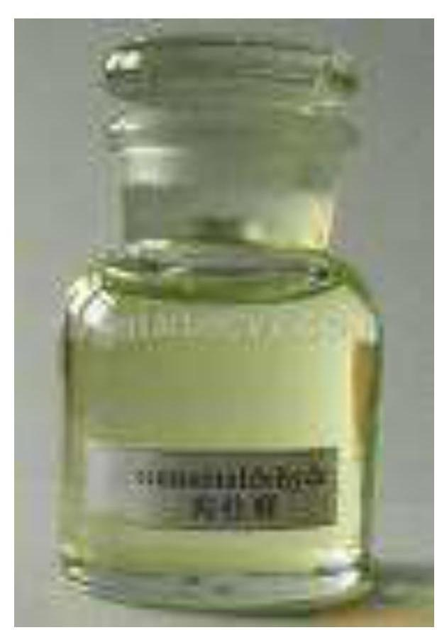
‘nin altında bir parlama noktasına sahip sıvılardır.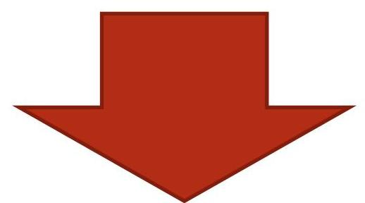
Örnekler:- Alkoller (etil, metil, isopropil)
- Civa
- Amonyak
- Organik kurşun bileşikleri
- Aldehitler (asetaldehit, akrolein, propional aldehit)
- Aminler (butil, etil, isopropil)
- Esterler (dietil, metil, etil, isopropil)
- Hidrokarbonlar (alkanlar, alkenler, alkinler, aromatik, naft, solventler)
- Ketonlar (aseton, metil etil keton, metil izobutil keton)
3. Gazlar
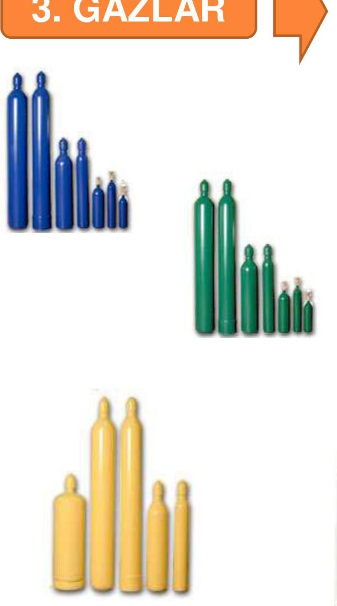
Kolaylıkla tutuşabilen ve hızla yanan gazlar:- Asetilen
- Bütan
- Propan
- Doğalgaz
- Metan
- Hidrojensülfür (kükürtlü hidrojen)
- Etilenoksit
- Hidrojen
- Hidrojensiyanür
- Formaldehit
Gazlar, etkilerine göre dört ana sınıfa ayrılır:
A. Basit Boğucu Gazlar
Normal atmosferik basınçtaki havada bulunan oksijen oranını hacimce %18’lerin altına düşürerek havasızlıktan dolayı boğulmaya neden olurlar.
- Karbondioksit (): 5000 ppm. Karbonlu maddelerin tam yanması sonucu oluşur.
- Metan (): Bataklık gazı olarak bilinir, bitkilerin çürümesi ve ayrışması sonucu oluşur. Kömür ocaklarında sıkça rastlanır.
- Etan (): Çeşitli kimya sanayiinde karşılaşılır.
- Propan ve Bütan ( ve ): LPG’nin ana bileşenleridir. Bütan için 1000 ppm; .
- Asetilen (): Kaynak işlerinde ve bazı kimya endüstrisinde kullanılır.
- Hidrojen: Akü şarj odalarında açığa çıkabilir.
- Azot, Argon, Neon, Helyum, Etilen ve Propilen: Bu sınıfa giren diğer gazlardır.
B- Kimyasal Boğucu Gazlar
Değişik mekanizmalarla hücre oksidasyonunu etkileyerek toksik etki gösterirler.
- Karbonmonoksit (CO): 50 ppm. Kömür, odun gibi organik maddelerin tam yanmamasıyla oluşur. Egzos gazlarında bolca bulunur. Maden ocaklarında yangın veya grizu patlamaları sonrası yoğun miktarda oluşur. Zehirlenmeler hem çalışma hayatında hem de evlerde sık görülür.
- Hidrojen Siyanür (HCN): 10 ppm. Sentetik lif ve plastik üretiminde, elektrolizle metallerin kaplanmasında, siyanür tuzları ve nitritlerinin üretiminde, böcek ve kemiricilere karşı öldürücü ilaç olarak kullanılır.
- Hidrojen Sülfür (): 10 ppm. Orta düzeydeki konsantrasyonlarına maruz kalmada bile ani ölümlere neden olabilir. Koku alma duyusu yüksek konsantrasyonlarda uyarıcı olmayabilir. Acil durumlarda uygun koruyucu solunum cihazları olmadan müdahale edilmemelidir. Hayvansal ve bitkisel atıkların kokuşması sonucu oluşur. Kimya, boya endüstrisi, viskoz ve rayon ipliği yapımı gibi işlerde de karşılaşılabilir.
C- Tahriş Edici Gazlar
Solunum yolları ve mukozaları tahriş eden gazlardır.
- Amonyak (): 25 ppm, (). Tekstil sanayi, suni gübre, üre, nitrik asit, bazı boyaların üretimi gibi işlerde karşılaşılır.
- Klor (): 1 ppm, (). Tekstil ve kağıt endüstrisinde beyazlatıcı olarak, su ve sıvı atıkların dezenfeksiyon gibi işlerde, alüminyum pres döküm işlerinde (dezoksidan olarak) karşılaşılabilir.
- Kükürtdioksit (): 2 ppm (). Sülfürik asit üretiminde, tekstil ve un sanayinde beyazlatıcı olarak, selüloz ve kağıt endüstrisinde kullanılır. Kok fırınlarında, petrol rafinerilerinde, kükürt bazlı cevherlerin arıtılması işlerinde, kömür ve fuel-oil gibi kükürtlü yakıtların yanması sonucu oluşur.
- Fosgen (): 0.1 ppm, (). Klorlu bileşiklerin yüksek ısıyla etkileşimi sonucu (istenmeyen bir tepkime biçiminde) oluşur.
- Azotoksitleri (): Savaş gazlarından biridir. Nitrik asit üretimi, patlayıcı madde üretimi, nitroselüloz ve bazı boyaların üretiminde oluşur. Ark kaynaklarında, dizel ve otomobil egzoz gazlarında bulunur.
- Azotdioksit (): 3 ppm, ().
- Ozon (): 0.1 ppm, (). Ark kaynakçılığında, röntgen odalarında, un, nişasta, şeker, kumaş gibi maddelerin beyazlatılmasında kullanılır.
- Formaldehit (HCHO): 0.75 ppm. Tekstil sanayinde, dericilikte, biracılıkta, su geçirmez kağıt yapımında, cam ve ayna işlerinde, sentetik reçine yapımında, suni tutkal ve çeşitli plastik madde üretiminde karşılaşılabilir.
- Bor triflorür, Butadien, Dimetilamin, Hidrojen klorür, Hidrojen florür ve Metil amin: Bu sınıfa giren diğer gazlardır.
D- Sistemik Zehir Etkisi Yapanlar
Vücutta belirli organ sistemlerini (kan, sinir sistemi vb.) etkileyerek zehirlenmeye yol açan gazlardır.
- Arsin (): 0.05 ppm, (). Arsenik içeren metallerin asitlerle temasa gelmesi gibi işlemlerde oluşur.
- Stibin (): 0.1 ppm, (). Antimon içeren metallerin asitle reaksiyona girdiği proseslerde yan ürün olarak, akümülatörlerin aşırı şarj edilmesi gibi işlemler sonucu oluşabilir.
- Fosfin (): 0.3 ppm, (). Sıcak fosforik asit ve asetilen gazı üretiminde fosfin tehlikesi vardır. Ayrıca alüminyum fosfat uygun olmayan depolarda nemlenirse fosfin gazı çıkma olasılığı vardır.
- Nikel karbonil (): 0.05 ppm, (). Saf nikel üretiminde, metallerin kaplanmasında, elektronik ve plastik endüstrisinde, petrol saflaştırmasında ve hidrojenasyon olaylarında katalizör olarak nikel kullanıldığında karbonil oluşabilir.
- Karbon Sülfür (): 10 ppm, (). Bazı lak ve verniklerin üretiminde, viskos ipeği yapımı gibi işlerde karşılaşılabilir.
4. Tozlar
Endüstride toz, havada asılı olarak kalabilen, büyüklüğü 0.1 ile 25 mikron arasında değişen katı partikülleri ifade eder. 5 mikronun üzerindeki tozlar, genellikle solunum problemi oluşturacak kadar uzun süre havada asılı kalamazlar.
Tozlar havaya çeşitli kaynaklardan dağılabilir. Örneğin, tozlu bir madde ile bir işlem yapılırken (kurşun oksit tozunun karıştırıcıya boşaltılırken veya talk tozu ile bir ürün tozlandırırken). Öğütme, ezme, patlama, sarsma ve delme gibi işlemlerle katı maddeler küçük ölçülere indirildiğinde, bu mekanik hareketler tozun havaya yayılması için gerekli enerji kaynağını da oluşturur.
Toz maruziyetini doğru olarak değerlendirebilmek için; kimyasal bileşimi, partikül büyüklüğü, havadaki toz derişimi ve dağılma özelliği gibi birçok faktörün bilinmesi gerekir.
Tehlikeli Endüstriyel Tozların Temel Sınıflandırması
| Tozun Çeşidi | En Sık Oluştuğu İş Kodu | Reaksiyon Çeşidi |
|---|---|---|
| I. KUARTZ VE KUARTZ İÇEREN KARIŞIMLAR | ||
| Kömür, maden cevherleri, fluorspar (mermer gibi bir çeşit taş), kaya, kum | Madencilik, mühendislik, malzemeleri ve kesme, döküm püskürtme. | Noduler Fibrozis |
| Kaolin | Seramik endüstrisi (porselen, çömlekçilik, toprak işi, sıhhi tesisat, elektrik teçhizatı). | Noduler Fibrozis |
| Kuvarsit | Ateşe dayanıklı malzemeler (tuğlalar) | Noduler Fibrozis |
| Kuartz tozu, Kizelgur (yanmış) | Filtre ve izolasyon malzemesi üretimi | Noduler Fibrozis |
| II. ASBEST VE ASBEST İÇEREN KARIŞIMLAR | ||
| Ham asbest, krizotil, amfibol | Asbest madeni, üretimi, çeşitli malzeme yapımı (izolasyon, tekstil, sürtünme malzemesi - balata, yangın önleme). 3000’den fazla asbest içeren ürün vardır. | Difuz Fibrozis, Kanser |
| Asbestli çimento | İnşaat endüstrisi ve bina malzemesi | Difuz Fibrozis, Kanser |
| Talk | Kauçuk endüstrisi, eczacılık, kozmetik, boya, kağıt ve baskı, tekstil | Difuz fibrozis, Nadir olarak nodular fibrozis, kanser |
| III. METALLER VE METAL BİLEŞİKLERİ | ||
| Alüminyum, alüminyum oksit | Fişekçilik sanayi (alüminyum tozları), zımpara maddesi üretimi, boksitin eritilmesi sonrasında çıkan alüminyum dumanı, hafif metal endüstrisi (kaynak ve alevle kesme). | Fibrozis |
| Berilyum, berilyum oksit | Metalürji, ışık tüpleri üretimi | Granuloma |
| Kadmiyum, kadmiyum oksit | Metalürji, elektro kaplama, boya endüstrisi (pigment-boyar madde) | Tahriş, sistemik zehir |
| Krom, krom oksit, kromatlar | Metalürji, elektro-kaplama, kaynak ve alevle kesme, pigment | Tahriş, kanser (+6 değerli krom bileşikleri kanserojendir. Örneğin: Alkali kromat, kromik oksit). |
| Sert metaller | Sinterleme | Fibrozis |
| Demir, demir oksit | Metalürji, metal işleri (kaynak, alevle kesme, taşlama), boya endüstrisi (pigmentler-boyarmadde) | Fibrozis, Birikme (akciğerlerde) |
| Kurşun, kurşun oksit | Metalürji, akü üretimi, silah sanayinde mermi üretimi, boya endüstrisi, kurşunlu boyalarla boyanmış malzemenin alevle kesilmesi (geri sökülmesi gibi) | Sistemik zehir etkileri (anemi, kolik, nörolojik semptomlar) |
| Manganez, manganez oksitleri | Metalürji, metal işleri (manganez içeren elektrotla kaynak), manganez cevherlerinin hazırlanması ve kullanılması. | Tahriş, sistematik zehir. |
| Nikel, nikel oksitleri, nikel tuzları | Metalürji, elektro-kaplama, kimya endüstrisi | Tahriş, kanser, nikel karbonilin sistemik zehir etkisi vardır |
| Vanadyum pentoksit | Kuvvet santrallerinde (yağ yakan fırınlarda tortu temizlenmesi), kimya endüstrisi (vanadyum katalistlerinin üretimi) | Tahriş |
| IV. BİTKİ VE HAYVAN TOZLARI (ORGANİK) | ||
| Öğütülmüş ve ezilmiş hububat ve kepek | Hububat öğütülmesi ve depolanması, fırınlar | Tahriş, allerji |
| Kereste | Ağaç kaplama, mobilya endüstrisi (parlatma) | Tahriş, allerji |
| Hayvan derisi, tüyü, kılı ve pulu | Tarım, hayvanat bahçesi bakıcılığı, laboratuvar, hayvan bakıcılığı, kürkçülük | Tahriş, allerji |
| Enzimler | İlaç endüstrisi, temizlik tozu üretimi, yiyecek ve içecek endüstrisi | Tahriş, allerji (dermatitler) |
| Küflü saman, ot, tahıl ve kamış | Tarım, tahıl siloları | Allerjik alveolitis, difuz fibrozis |
| Tavuk, güvercin, muhabbet kuşu pisliği | Kümes hayvanları bakıcılığı ve hayvanat bahçeleri | Allerjik alveolitis, difuz fibrozis |
| Pamuk, keten, kenevir, jüt | Pamuk tarama, pamuk ve keten bükümü-taranması | Tahriş, bronkospazm |
Biyolojik Tozlar
Biyolojik tozlar, etki mekanizmalarına göre dört ana kategoriye ayrılır:
- A- Fibrojenik Tozlar: Solunumla akciğerlere ulaşıp birikme sonucu dokusal değişimle akciğerlerde fonksiyonel bozukluk yapan tozlar. Örnekler: Silis, kuvars, Asbest, Kömür tozu.
- B- Toksik (zehirli) Tozlar: Genellikle metal bileşikleridir. Merkezi sinir sistemi, karaciğer, böbrek, kan gibi organ veya dokular üzerinde akut ya da kronik etki yapan tozlar. Örnekler: Kurşun, krom, TNT, Arsenik vb.
- C- Allerjik Tozlar: Egzama veya astım yapan tozlar. Örnekler: Pamuk, keten, kenevir, sisal keneviri, jüt, Platin bileşikleri (tuzları), Tahta tozları, Hayvan derileri ve postu, saçı, tüyü ve pulu, Enzimler.
- D- Sıkıcı (inert) Tozlar: Solunumla akciğerlere ulaşmalarına rağmen akciğerlerde fonksiyonel bozukluk yapmayan tozlar. Örnekler: Alümina (), Kalsiyum karbonat, Selüloz-kağıt lifi, Zımpara, Gliserin misti, Alçı taşı, Kaolin, Kireçtaşı, Magnezit, Mermer, Cam yünü, Pentaeritritol, Paris plasteri, Portland çimentosu, Ruj, Silikon, Silikon karbit, Nişasta, Sakaroz, Titanyum dioksit, Çinko stearat, Çinko oksit tozu.
5. Endüstriyel Çözücüler
Endüstride çok geniş bir alanda çözücüler kullanılmaktadır. “Solvent” terimi, diğer organik materyalleri çözmeden kullanılan organik sıvıları anlatır. Çözücülerin/solventlerin bileşiminde bulunan benzin, aseton, toluen, trikloroetilen, etilasetat, benzol ve daha yüzlerce çeşit organik çözücünün (hidrokarbonlar alifatik ve aromatik, halojenli hidrokarbonlar, alkoller, eterler, aldehitler, glikol türevleri, esterler, ketonlar ve çeşitli çözücüler) buharlarının işyeri havasına karıştığı işyerlerinde yeterli önlemler alınmadan sürekli çalışan işçilerde böbrek, karaciğer, sinir ve kan yapıcı sistemlerde bozukluklar gibi ciddi sağlık sorunları (meslek hastalıkları) görülebilir.
Kimyasal Etmenleri Kontrol Yöntemleri
Kimyasal risk etmenlerini kontrol etmek için çeşitli yöntemler mevcuttur.
A- Mühendislik Kontrolleri
- İkame Yöntemi: Tehlikeli kimyasal madde yerine daha az tehlikeli bir madde kullanılması.
- Ayırma (İzolasyon-Tecrit): Tehlikeli süreçleri veya maddeleri çalışanlardan fiziksel olarak ayırma, kapalı sistemler kullanma.
- Havalandırma: Genel havalandırma veya lokal cebri çekiş (aspirasyon) ile tehlikeli maddelerin ortam havasından uzaklaştırılması.
B- İdari Kontrolleri
- Çalışanların çalışma sürelerini azaltma: Maruziyet süresini kısıtlayarak riski düşürme.
- İşçilerin maruziyetlerini kontrol etme: Çalışma rotasyonları, eğitimler, düzenli sağlık kontrolleri.
C- Kişisel Koruyucular
- Göz ve Yüz Koruyucular: Güvenlik gözlükleri, yüz siperleri.
- Koruyucu Giysiler: Kimyasala dirençli eldivenler, önlükler, tulumlar.
- Koruyucu Kremler: Cilt bariyerini güçlendiren kremler.
Kimyasal Risk Etmenlerine Maruziyetin Yüksek Olduğu İş Kolları
Kimyasal risklere maruziyetin yoğun olduğu meslek grupları ve ilişkili şüpheli kimyasallar aşağıda listelenmiştir:
| MESLEK GRUPLARI | ŞÜPHELİ KİMYASALLAR |
|---|---|
| Eczacılık sanayinde çalışanlar | İlaç ve kimyasal maddeler |
| Narkozcular ve yoğun bakım çalışanları (sağlık bakımı ve tıbbi bakım) | Sıvı narkoz ve ilaçlar |
| Kanser tedavisinde çalışanlar | Tümör oluşumuna neden olan ilaçlar (özellikle sitostatikler) |
| Çeşitli sanayi ve laboratuvar işleri | Organik çözücüler |
| Kauçuk sanayii | Kauçuk kimyasalları |
| Diğer | Zararlı otları yok eden ilaçlar ve böcek ilaçları |
MSDS (Malzeme Güvenlik Bilgi Formları)
Günümüzde endüstride birçok kimyasal yaygın olarak kullanılmaktadır. Bu kimyasallar doğaları gereği çoğunlukla toksik, korozif ve kolay alev alabilir özelliktedirler. Ancak risk taşıyan özellikleri ile kullanımı ve depolanmalarında alınması gereken önlemler bilindiğinde güvenli bir şekilde kullanılabilmektedirler.
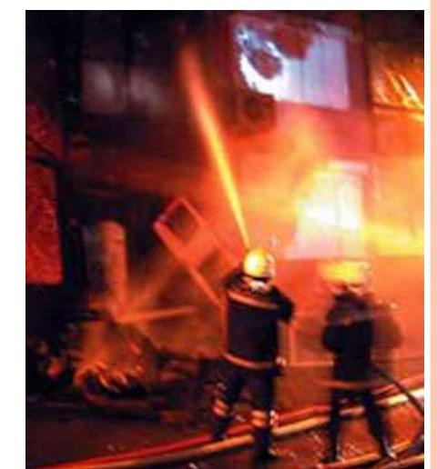
Kimyasal ya da genel bilinen adı ile Malzeme Güvenlik Bilgi Formları (Material Safety Data Sheet - MSDS) birçok ülkede tehlikeli ya da potansiyel tehlike taşıyan maddelerin güvenli kullanımları ile ilgili gerekli bilgileri sağlamak için kullanılmaktadırlar. Bu nedenle MSDS, çalışma ortamındaki kimyasal tehlike ve riskleri kontrol etmek açısından önemli bir rol oynamaktadır.
Güvenlik Bilgi Formu (GBF)
Güvenlik Bilgi Formu (GBF), tehlikeli madde/müstahzarların (en az iki veya daha çok maddenin karışım veya çözeltileri, tehlikeli kimyasallar);
- Risklerini
- Güvenli taşınım ve kullanımını
- Kaza halinde alınması gerekli önlemleri içeren belge.
Tehlikeli kimyasalların açık kimliği, üretiminden bertarafına kadar geçen süreçte kimyasal güvenliğin sağlanması için bilgi paylaşım aracıdır.
GBF İçermesi Gereken Minimum Bilgiler
GBF’ler, aşağıdaki minimum bilgileri içermek zorundadır:
Malzemenin ve firmanın tanımlanması
- Ürün adı, üretici bilgileri, iletişim.
Bileşimi / İçindeki maddeler hakkında bilgiler
- Tehlikeli bileşenler ve konsantrasyonları.
Tehlike tanımlamaları
- Fiziksel, kimyasal ve sağlık tehlikelerinin özeti.
Yangınla mücadele önlemleri
- Uygun söndürme maddeleri, özel tehlikeler.
İlk yardım önlemleri
- Maruziyet durumunda yapılacak acil müdahaleler.
Kazayla açığa çıkması durumunda alınacak önlemler
- Dökülme veya sızıntı durumunda temizlik ve koruma.
Taşıma, kullanma, depolama önlemleri
- Güvenli elleçleme, depolama koşulları.
Maruz kalma kontrolleri / Kişisel korunma
- Maruziyet limitleri, KKD gereksinimleri.
Fiziksel ve kimyasal özellikler
- Parlama noktası, kaynama noktası, yoğunluk vb.
Kararlılık ve reaktivitesi
- Reaktif olduğu maddeler, tehlikeli ayrışma ürünleri.
Toksikolojik bilgiler
- Akut ve kronik toksisite, kanserojenlik, mutajenik etki.
Ekolojik önlemler
- Çevreye potansiyel etkileri, ekotoksisite.
İmhaya-bertaraf a dair bilgiler
- Atık yönetimi, bertaraf yöntemleri.
Taşıma nakliye önlemleri
- Uluslararası taşıma sınıflandırmaları, gerekli etiketlemeler.
Denetim ve Yaptırım
İlgili Kuruluşlar
- Gıda, Tarım ve Hayvancılık Bakanlığı (Bitki koruma ürünleri)
- Sağlık Bakanlığı (Biyosidaller, Deterjanlar)
- Çevre ve Şehircilik Bakanlığı (Diğerleri)
Yaptırım
İlgili kuruluşların mevzuatı çerçevesinde uygulanır.
Tehlikeli Kimyasal Madde İşaretleri
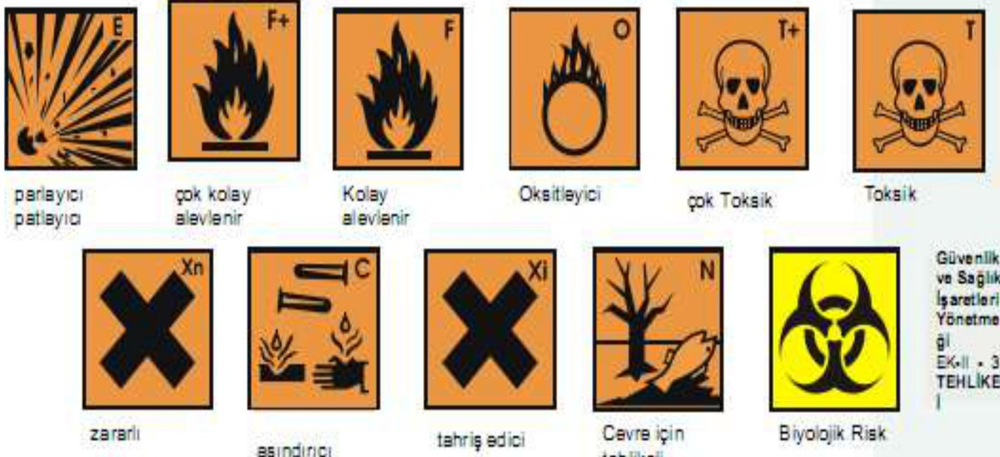
Tehlikeli kimyasal ve biyolojik maddeler, çalışma esnasında da işaretlenmiş olmalıdır.| Parlayıcı Patlayıcı | Çok Kolay Alevlenir | Kolay Alevlenir | Oksitleyici | Çok Toksik | Toksik |
|---|---|---|---|---|---|
| Zararlı | Aşındırıcı | Tahriş Edici | Çevre İçin Tehlikeli | Biyolojik Risk |
ADR İşaretleri (I)
Trafik yolları üzerinden nakledilen kimyasallar özel işaretlerle belirtilmelidir.
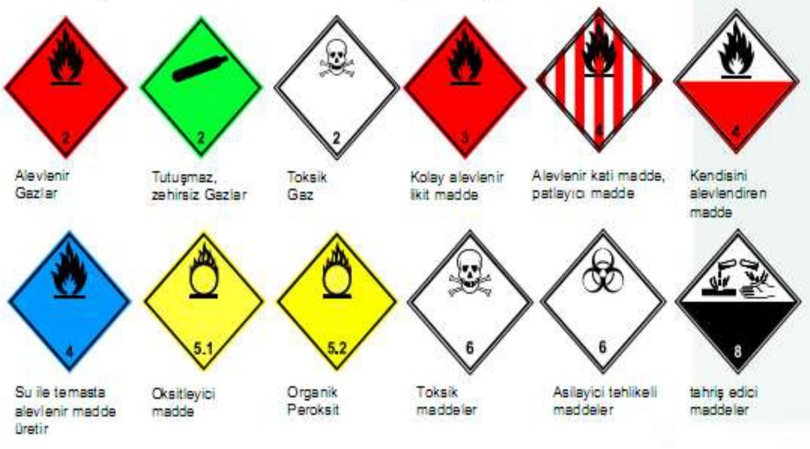
Bazı Maddelerin Zararlı Etkisi ve Yapılacak İlkyardım
Aşağıdaki tablo, sık karşılaşılan bazı kimyasalların zararlı etkilerini ve acil durumlarda yapılması gereken ilkyardım müdahalelerini özetlemektedir:
| Kimyasal | Zararlı Etkileri | Yapılacak İlkyardım |
|---|---|---|
| Amonyak | Cilt ve boğazda tahriş ve yanma hissi, yutulduğunda ve solunduğunda toksik etki | Gözler ve cilt bol su ile yıkanmalı, bulaşmış giysiler çıkarılmalı, teneffüs edildikten sonra oksijen solunmalı. |
| Arsenik | Kılcal damar felci, dolaşım bozukluğu | Hemen doktora başvurulmalı, mide yıkanmalı. |
| Baryum Bileşikleri ( dışında) | Sadece iyonlaşmış bileşikler etki gösterir. Adelelerde felç, ishal. | Cilt ve gözler bol su ile yıkanmalı. |
| Benzen | Boğazda çok az gıcıklanma, kansere yol açabilir, baş dönmesi, kusma. | Gözler bol su ile yıkanmalı, Benzen buharı solunmuşsa temiz havaya çıkarılmalı, yutulmuşsa aktif karbon alınmalı. |
| Klor | Şiddetli tahriş edici gazdır. Cilt ve solunum yoluna etki eder, bir süre sonra akciğer ödemi oluşturabilir. | Maske takmalı, gözler su ile cilt su ve sabun ile yıkanmalı, solunmuşsa temiz havaya çıkarılmalı. |
| Nitritler | Damar kaslarında doğrudan genişlemeye neden olur. | Yutulmuşsa su içilmeli, kusmak için çalışılmalı. |
| Nitroz Gazları | Yakıcı gaz, öksürme, nefes alma güçlüğü, birkaç saat sonra akciğer ödemi oluşturabilir. | Suni teneffüs, istirahat etmeli, ısı kaybı önlenmeli, doktor kontrolünde tedavi. |
| Karbon monoksit | Kan ile oksijen taşınmasını engeller, baş ağrısı, baş dönmesi, kusma, yüksek derişimde alınması halinde öldürücüdür. | Hemen müdahale edilmeli, temiz havaya çıkarılmalı, oksijen çadırına alınmalı, hastanın ısı kaybı önlenmeli. |
| Bazlar | Derişime bağlı olarak yanma veya tahriş, kızartı oluşumu, ciltte bozulma, gözler için tehlikelidir, yutulursa mide delinebilir. | 10-15 dakika gözler açık durumda yıkanır, cilt bol su ile yıkanır, yutulmuşsa bol su içilmeli, doktora başvurulmalıdır. |
| Metanol | Narkoz etkisi ve kör olma tehlikesi var. Halsizlik, görme bozuklukları, kusma, kramplar ve şuur kayıpları. | Cilt bol su ile yıkanmalı, gözler bol su ile yıkanmalı, oksijen teneffüs edilmeli, yutulmuşsa 40 mL alkollü içki ve aktif karbon içilmeli. |
| Toluen | Gözleri ve solunum yollarını tahriş eder. Narkoz etkisi gösterir, nefes yolları felci. | Cilt ve gözler bol su ile yıkanmalı, temiz havaya çıkıp oksijen teneffüs edilmelidir. |
| Talyum | Zehirleme etkisi gizli ve sinsi şekilde olur. Kusma, duyu kaybı, saç dökülmesi görülür. | Yutulduğunda mide yıkanmalı ve aktif karbon alınmalı. |
| Fosgen | Yakıcı tahriş edici gaz. Öksürme, göğüste basınç hissi, birkaç saat sonra akciğer ödemi oluşturabilir. | Suni teneffüs yaptırılmalı, temiz havaya çıkılmalı, ısı kaybı önlenmeli, doktor kontrolünde tedavi. |
| Asitler | Derişime göre tahriş veya tahribat, yutulursa yemek borusu ve midenin delinme tehlikesi. | Gözler açıkken 10-15 dakika su ile yıkanır. Sonra göz doktoruna başvurulur. Nötrleştirmek amacıyla hiçbir işlem yapılmamalı, kusturulmamalı. |
| Nitrik Asit | Asitler için alınan önlemlere başvurulur. | - |
| HCl buharı | Kuvvetli tahriş edici gaz, cilt ve boğazda tahriş, bir süre sonra akciğer ödemi oluşturabilir. | Gözler ve cilt bol suyla yıkanmalı, bulaşmış elbiseler çıkarılmalı, temiz havaya çıkılmalı. |
| HF (Hidrojen Florür) | Çok toksik ve tahriş edici, ağır ve derin tahrişe neden olur. Şiddetli ağrıya yol açabilir, bir süre sonra akciğer ödemi oluşturabilir. | Hemen müdahale gerektirir. Gözler ve cilt bol su ile yıkanmalı, HF bulaşmış bölgeye kalsiyum glukonat jeli sürülmeli, solunmuşsa temiz havaya çıkarılmalıdır. Yutulmuşsa kusturulmamalıdır, hemen hastaneye başvurulmalıdır. |
Temel Formüller ve Hızlı Bilgiler
Konsantrasyon Birimleri
- ppm (parts per million): Özellikle gaz ve buharların havadaki yoğunluğunu ifade etmek için kullanılır. Tanım: Milyonda bir kısım. .
- mg/m³ (miligram per metreküp): Partikül veya gaz halindeki maddelerin kütle konsantrasyonunu ifade eder. Dönüşüm: Gazlar için sıcaklık ve basınca bağlıdır, ancak genel bir formül:
mg/m³ = (ppm x Molekül Ağırlığı) / 24.45(25°C ve 1 atm için)
Toksikoloji Limitleri
- LD₅₀ (Lethal Dose 50): Bir maddenin test hayvanlarının %50’sini öldürmek için gereken dozu (\text{mg/kg} vücut ağırlığı cinsinden) gösterir.
- LC₅₀ (Lethal Concentration 50): Bir maddenin belli bir süre maruz kaldıktan sonra test hayvanlarının %50’sini öldüren konsantrasyonudur (gazlar için \text{ppm} veya \text{mg/m³}).
Maruziyet Limitleri
- MAK / MAC (Müsaade Edilebilen Azami Konsantrasyon): Çalışma süresince hiçbir zaman aşılmaması gereken ani tehlikeli konsantrasyon sınırı. Akut etki gösteren maddeler için önemlidir.
- ESD / TLV (Eşik Sınır Değer): 8 saatlik iş günü boyunca maruz kalınabilecek, sağlık sorunlarına yol açmayacağı düşünülen ortalama konsantrasyon. Kronik etki gösteren maddeler için kullanılır.
- TLV-TWA (Time Weighted Average): 8 saatlik iş günü ve 40 saatlik iş haftası için zaman ağırlıklı ortalama konsantrasyon.
- TLV-STEL (Short-Term Exposure Limit): 15 dakikalık kısa süreli maruziyet limiti, günde en fazla 4 kez ve aralarında en az 60 dakika mola ile aşılabilir.
- TLV-C (Ceiling): Hiçbir koşulda aşılmaması gereken tavan konsantrasyonu.
Alevlenme Noktası Sınıflandırmaları
- Alevlenir Madde (F): Parlama noktası arası sıvılar.
- Kolay Alevlenir Madde (F): Parlama noktası altı sıvılar, enerji olmadan ısınabilen/yanabilen katılar, su ile temasta yanıcı gaz çıkaranlar.
- Çok Kolay Alevlenir Madde (F+): Parlama noktası altı ve kaynama noktası altı sıvılar, oda sıcaklığında hava temasıyla yanan gazlar.
Tozların Büyüklüğü
- Partikül Büyüklüğü: Endüstriyel tozlar genellikle 0.1 ile 25 mikron arasıdır.
- Solunabilir Toz: Genellikle 5 mikronun altındaki tozlar akciğerlere derinlemesine ulaşabilir ve sağlık sorunlarına yol açabilir. Daha büyük tozlar genellikle üst solunum yollarında tutulur ve havada daha kısa süre asılı kalır.
Kimyasal Risk Kontrol Yöntemleri Hiyerarşisi (Kontrol Piramidi)
- En Etkili: Kaynakta ortadan kaldırma (İkame)
- İkinci En Etkili: Mühendislik Kontrolleri (İzolasyon, Havalandırma)
- Üçüncü Etkili: İdari Kontroller (Çalışma süreleri, eğitimler)
- En Az Etkili: Kişisel Koruyucu Donanımlar (KKD) Not: Kontrol hiyerarşisinde her zaman kaynağa yakın ve pasif kontrol yöntemleri önceliklidir. KKD son çare veya diğer kontrollerle birlikte kullanılır.
Referanslar
Kaynak bulunamadı.